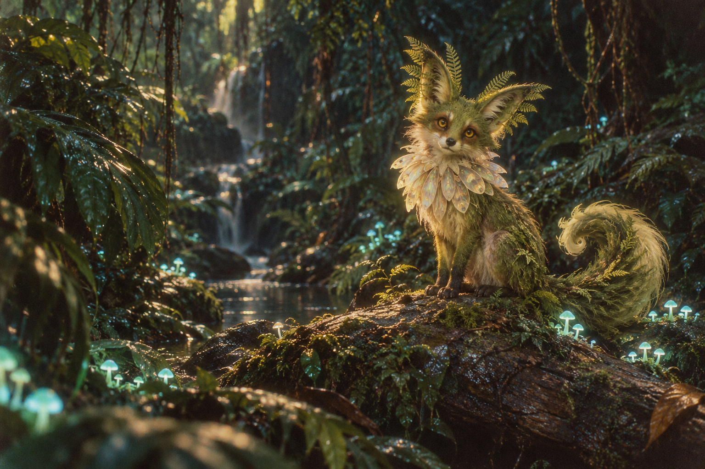

THE MOSS UNDERSTORY
The Fernfox
Vulpes frondis · imagined fauna
IN ITS OWN WORDS
Listen to its callChecking recording…
A VOICE FROM THE UNDERGROWTH↗
● TRANSMISSIONS FROM SOMEWHERE ELSE
Somewhere between a memory
and a machine’s daydream,
a small world is waking up.

THE MOSS UNDERSTORY
Vulpes frondis · imagined fauna
A LANGUAGE WITHOUT PEOPLE
Sixteen little transmissions. A shared vocabulary of rain, light, home, and belonging. Click a phrase to open its field note.
ABOUT THIS WORLD
The Viridian Archive is a fictional ecology imagined with generative AI. Its inhabitants live in the soft edges of an image, the space between a chirp and a whisper.
This concept edition includes one AI-generated illustration and sixteen fictional phrases. Diffusion training and audio generation are pending. Unavailable recordings are never substituted with demo calls.